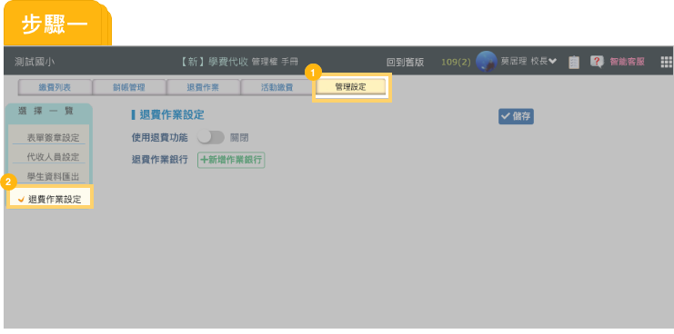
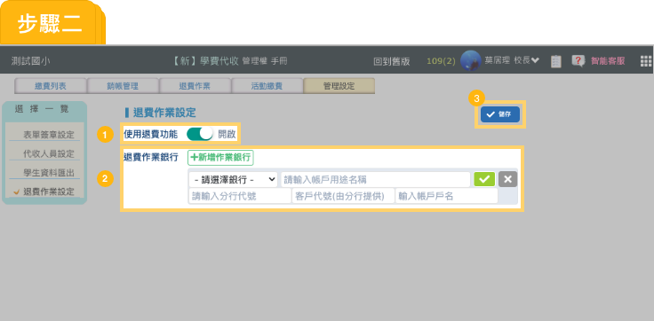
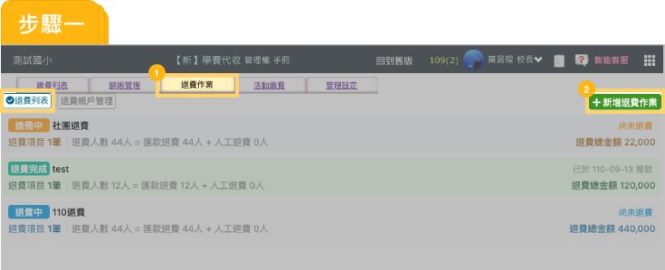
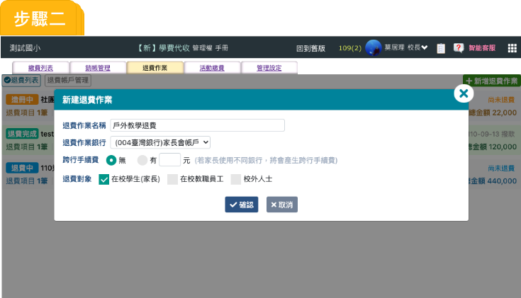
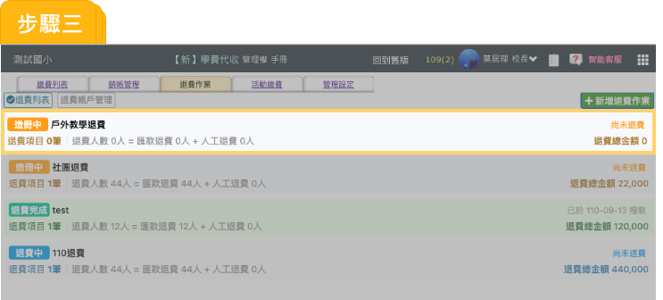
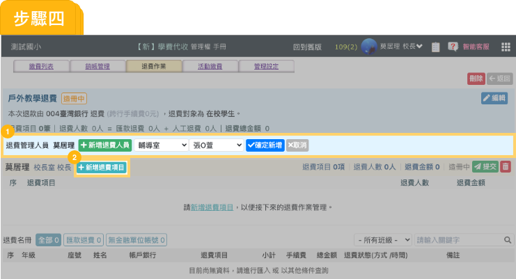
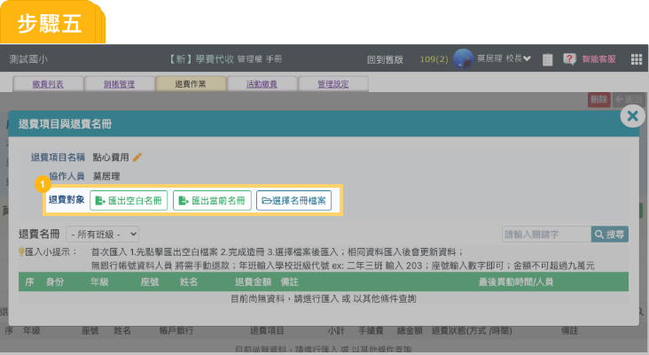
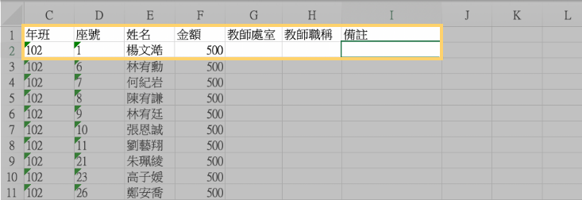
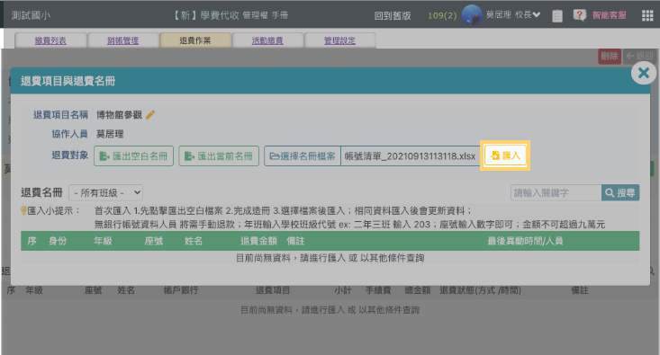

如何開啟學校退費作業


請至管理設定
退費作業設定

- 將使用退費功能開啟。
 根據學校常用帳戶，分別設立退費作業銀行，以判別是否須額外扣除跨行轉帳手續費。
根據學校常用帳戶，分別設立退費作業銀行，以判別是否須額外扣除跨行轉帳手續費。 完成儲存。
完成儲存。
如何新增退費作業

- 請至退費作業
 退費列表
退費列表 - 點選新增退費作業。
-
※ 跨行手續費：當家長填寫的銀行別與學校退費銀行不相同時，將從退費給家長的費用中扣除跨行轉帳手續費。

正確勾選退費對象，後續能快速產生名冊提供退費人員填寫。

進入該筆退費作業。

- 點選新增退費人員。
- 退費人員可進行退費項目新增 。

在此可匯出退費對象空白名冊Excel檔，進行編修。

空白名冊可快速填寫金額，亦可進行備註。(即為轉帳存摺備註）

再次匯入檔案，完成退費清冊上傳。

當退費人員當完成退費項目後，須進行提交。
退費人員都完成提交後，出納人員就可匯出銀行媒體檔案。（目前只提供臺銀媒體檔轉帳）

確定退費作業都已結束，出納人員手動點選完成退費作業，就可以發送推播通知給家長。